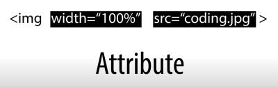

안녕하세요.
홍상혁의 HTML
개발
공부
용 페이지다~
h1 글자
h2 글자
h3 글자
h4 글자
h5 글자
h6 글자
1째줄
2째줄
3째줄
단락1은 숫자 1이 뭔지에 대해 설명할거에요~~ 어쩌구 저쩌구 어쩌구 저쩌구어쩌구 저쩌구
단락2는 숫자 2가 뭔지에 대해 설명할거에요~~ 어쩌구 저쩌구 어쩌구 저쩌구어쩌구 저쩌구
단락1은 숫자 1이 뭔지에 대해 설명할거에요~~ 어쩌구 저쩌구 어쩌구 저쩌구어쩌구 저쩌구
단락2는 숫자 2가 뭔지에 대해 설명할거에요~~ 어쩌구 저쩌구 어쩌구 저쩌구어쩌구 저쩌구

리스트1-1
리스트1-2
리스트1-3
리스트2-1
리스트2-2
리스트2-3
네이버로 가는 링크
페이지 1로 가는 링크
Please enable JavaScript to view the
comments powered by Disqus.